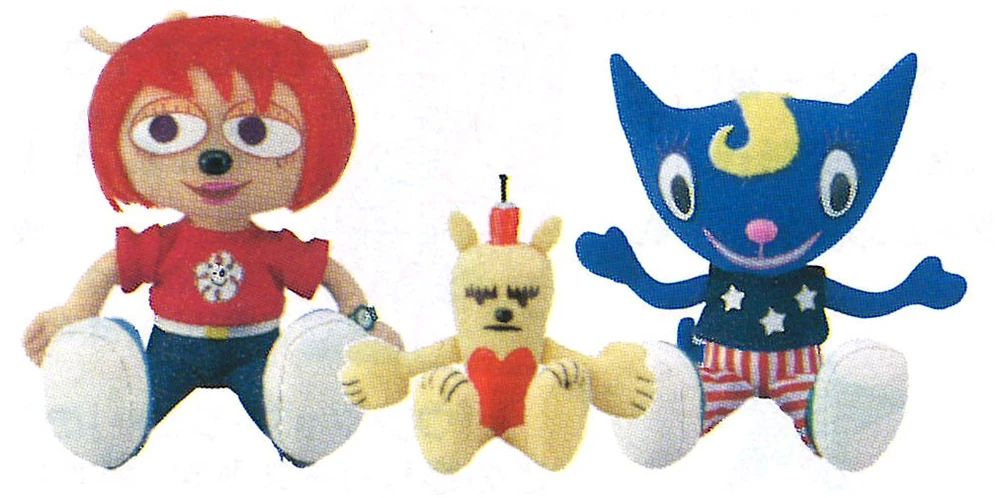
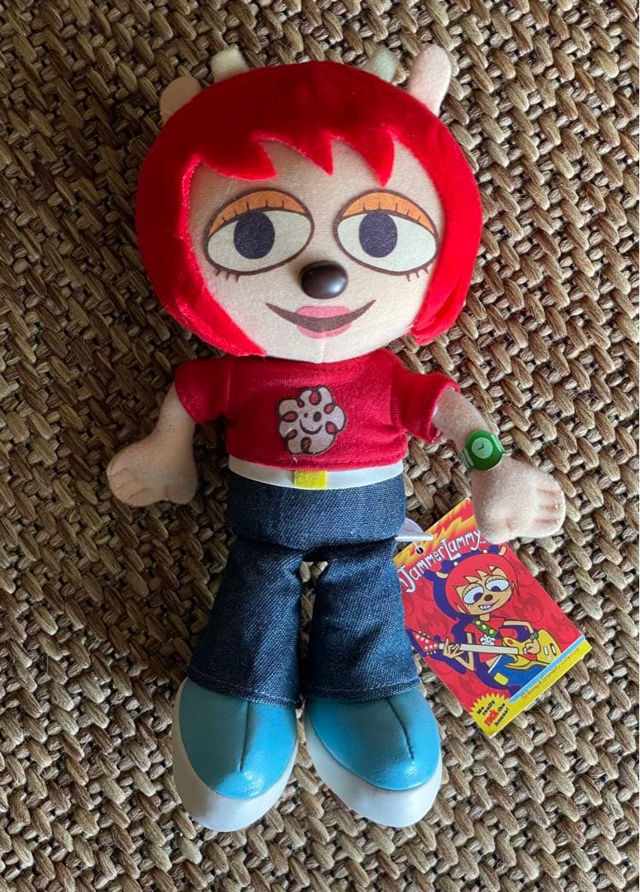
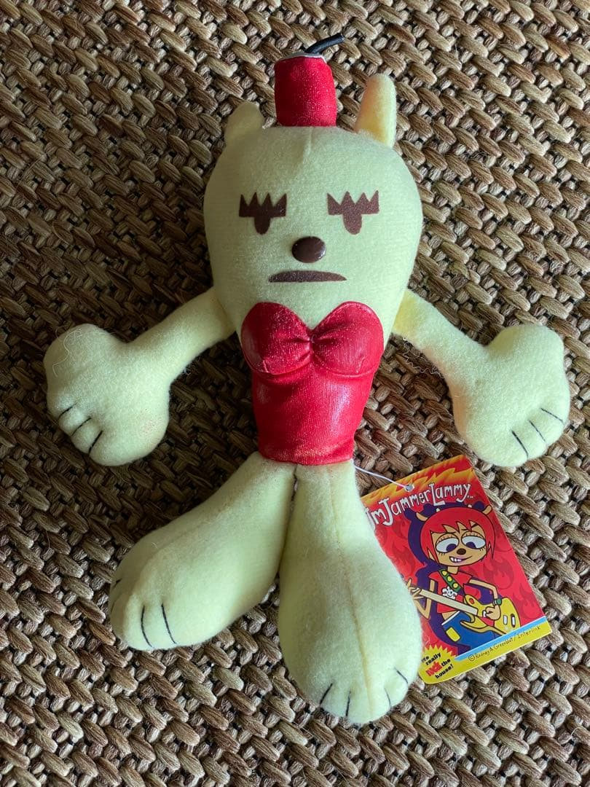

★ UM JAMMER LAMMY — PLUSH TOYS ★★ ウンジャマ・ラミー — ぬいぐるみ ★
Plush toys from the Um Jammer Lammy launch wave, all produced in 1999 under the Sony Creative Products licence to coincide with the PlayStation release of the game. SCP issued the line in two formats: a large boxed electronic Jamming Lammy centrepiece that plays guitar at the press of a button, and a soft set of three full-body MilkCan plushes — Lammy, Ma-san, and Katy Kat — sold individually with the rainbow Um Jammer Lammy hang-tag. Together they make up the only official 1999 plush range for UJL, and remain the rarest plush items in the wider Rodney Greenblat × Sony catalogue.
ウンジャマ・ラミー発売時にリリースされたぬいぐるみコレクション。いずれもPlayStation版の発売に合わせて1999年にソニー・クリエイティブプロダクツのライセンスで製造された商品です。SCPは2つのフォーマットでこのシリーズを展開しました——ボタンを押すとギターを演奏する大型ボックス入り電子ぬいぐるみジャミングラミーと、ラミー・マーさん・ケイティ・キャットの3体からなる全身ソフトぬいぐるみセットで、いずれも単品売りで虹色のウンジャマ・ラミーハングタグ付き。これら2形態が1999年当時のUJL公式ぬいぐるみシリーズのすべてであり、ロドニー・グリーンブラット×ソニーのカタログ全体の中でも最も希少なぬいぐるみアイテムです。
— SONY CREATIVE PRODUCTS — MILKCAN PLUSH SET (1999) —— ソニー・クリエイティブプロダクツ — ミルクカン ぬいぐるみセット（1999年） —

MilkCan Plush Trio (Sony Creative Products, 1999) — official catalogue photo of all three full-body MilkCan plushes seated together: Lammy in her red MilkCan tee and jeans, Ma-san centred with his red strap-top and bottle-cap horn, and Katy Kat in her star tank and red-and-white striped shorts. Released as a coordinated three-character set timed to the 1999 launch of Um Jammer Lammy and sold individually at retail.ミルクカンぬいぐるみ3体（ソニー・クリエイティブプロダクツ・1999年）— 全身ぬいぐるみ3体を並べた公式カタログ写真。赤いミルクカンTシャツとジーンズ姿のラミー、中央には赤いストラップトップと瓶のキャップ角を備えたマーさん、星柄タンクトップに赤白ストライプ短パンのケイティ・キャット。ウンジャマ・ラミー1999年発売に合わせた3キャラクター連動セットとして展開され、店頭では単品ごとに販売された。

Lammy (Sony Creative Products, 1999) — front view of the Lammy entry in the SCP MilkCan plush set. Embroidered eyes, nose, and mouth on a soft head, red hair piece with the trademark forward-flick, red MilkCan tee with the embroidered chest emblem, denim flares, and stitched teal slip-on shoes. The orange Um Jammer Lammy rainbow hang-tag — the standard SCP licence card — hangs on a red lanyard at the right wrist, exactly the same tag style used across the trio.ラミー（ソニー・クリエイティブプロダクツ・1999年）— SCPミルクカンぬいぐるみセットのラミーの正面ビュー。柔らかい頭部に目・鼻・口を刺繍し、トレードマークの前髪が立ち上がる赤いヘアパーツ、胸元にミルクカンエンブレムを刺繍した赤Tシャツ、デニムのフレアパンツ、縫製されたティールのスリッポンシューズが特徴。右手首には3体共通のSCPライセンスカード——オレンジ地のウンジャマ・ラミー レインボー下げ札が赤いストラップで取り付けられている。



Ma-san (Sony Creative Products, 1999) — front view of the Ma-san entry in the SCP MilkCan plush set. Pale-yellow body with embroidered closed eyes and downturned mouth, glossy red leatherette bottle-cap horn on top of the head, and the character's signature red strap top with a satin red bow at the chest. The orange UJL rainbow hang-tag — the SCP licence card — is still attached at the right hip.マーさん（ソニー・クリエイティブプロダクツ・1999年）— SCPミルクカンぬいぐるみセットのマーさんの正面ビュー。淡いイエロー本体に閉じた目とへの字口を刺繍、頭頂部にはツヤのある赤い合成レザーの瓶のキャップ、胸元には特徴的な赤いストラップトップとサテンの赤いリボンが付く。右腰には、SCPライセンスカードであるオレンジ地のUJLレインボー下げ札が取り付けられたままの状態。


Katy Kat (Sony Creative Products, 1999) — front view of the Katy Kat entry in the SCP MilkCan plush set. Bright sky-blue head with the signature yellow swirl forelock, embroidered lashed eyes, and pink nose; navy star-front tank top, red-and-white vertical-striped shorts, and lavender slip-on shoes. The small UJL rainbow hang-tag — the SCP licence card — hangs on a red lanyard at the right shoulder.ケイティ・キャット（ソニー・クリエイティブプロダクツ・1999年）— SCPミルクカンぬいぐるみセットのケイティ・キャットの正面ビュー。鮮やかなスカイブルーの頭部にトレードマークの黄色い渦巻き前髪、まつ毛入りの目とピンクの鼻を刺繍。ネイビーの星柄タンクトップ、赤白ストライプの縦縞ショートパンツ、ラベンダーのスリッポンシューズという定番衣装。右肩には赤いストラップで小さなSCPライセンスカード（UJLレインボー下げ札）が下がっている。
— SONY CREATIVE PRODUCTS — JAMMING LAMMY (1999) —— ソニー・クリエイティブプロダクツ — ジャミングラミー（1999年） —

Jamming Lammy — Plays The Guitar! (Sony Creative Products, 1999) — large boxed electronic plush in its original window box. Lammy sits cradling her yellow Fernandes-style guitar; pressing the button triggers her signature riff. The flame-bordered orange-and-yellow card art reads "JammingLammy / PLAYS THE GUITAR!" across the top, with the green-and-yellow "UmJammerLammy™" wordmark and the small "Leave it to Lammy" Lammy mascot at the bottom right. The flagship plush in SCP's 1999 UJL launch line and still the centrepiece of any Lammy plush collection.ジャミングラミー — Plays The Guitar!（ソニー・クリエイティブプロダクツ・1999年）— 大型のボックス入り電子ぬいぐるみ。ラミーが黄色いフェルナンデス風ギターを抱えて座り、ボタンを押すとお馴染みのリフが鳴る仕様。炎モチーフで縁取られたオレンジ＆イエローのカードアートには上部に「JammingLammy / PLAYS THE GUITAR!」、下部に緑と黄色の「UmJammerLammy™」ロゴと右下の小さな「Leave it to Lammy」ラミーマスコットが配されている。SCPによる1999年UJLローンチラインのフラッグシップであり、ラミーぬいぐるみコレクションの中心を成す一品。
— SONY CREATIVE PRODUCTS — UJL CUSHION SET (1999) —— ソニー・クリエイティブプロダクツ — UJLクッションセット（1999年） —

Lammy Die-Cut Cushion + MilkCan Emblem Mini Cushion (Sony Creative Products, 1999) — full-colour bear-silhouette throw pillow printed with Lammy seated cross-legged playing her yellow guitar, paired with a small round companion cushion printed with the red MilkCan "M" flower emblem. The orange UJL rainbow hang-tag is still attached to the smaller pillow, confirming this as the original 1999 SCP retail set rather than a later reprint.ラミー ダイカットクッション ＋ ミルクカンエンブレム ミニクッション（ソニー・クリエイティブプロダクツ・1999年）— ベアシルエットのフルカラー大判クッションには、あぐらをかいて黄色いギターを弾くラミーがプリントされ、対になる小さな丸型コンパニオンクッションには赤いミルクカンの「M」フラワーエンブレムが配されている。小型クッションには1999年SCP発売当初のオレンジUJLレインボー下げ札が付いたままで、後年のリプリントではなく当時のオリジナル販売セットであることが確認できる。
— CREAMTOYZ LAMMY (2015) —— CREAMTOYZ ラミー（2015年） —

CREAMTOYZ Lammy (2015) — Japanese plush atelier CREAMTOYZ revisited Lammy in 2015 with a brand-new soft-toy design released in extremely limited numbers. The figure features a chunky red mohair-style hair piece, large screen-printed eyes set into padded fabric domes, the red MilkCan tee with embroidered chest emblem, denim shorts, and pale blue felt feet. Pictured here in the official CREAMTOYZ promotional layout, set against the standard orange UJL flame-pattern background flanked by the "UmJammer / Lammy" wordmark — distinct from the 1999 Sony Creative Products plush line shown above and produced 16 years later as a one-off boutique reissue.CREAMTOYZ ラミー（2015年）— 日本のぬいぐるみ工房CREAMTOYZが2015年に再びラミーを商品化した、超少量生産の完全新規デザイン。ボリュームのある赤いモヘア風ヘアパーツ、パッド入りのファブリックドームに収められた大きなスクリーンプリントの目、胸に刺繍エンブレム入りの赤いミルクカンTシャツ、デニムショートパンツ、淡いブルーのフェルト足が特徴。本写真はCREAMTOYZ公式プロモレイアウトで、UJLライン共通のオレンジ炎模様の背景に「UmJammer / Lammy」ロゴをフレーミングした構図。上記の1999年ソニー・クリエイティブプロダクツ・ぬいぐるみラインとは別物で、16年の時を経て発売された一品物的なブティックリイシューにあたる。

Original Listing — RodneyFun.com Shop. Screenshot of the original product page for this plush on the official RodneyFun.com Shop, where the 2015 CREAMTOYZ Lammy was sold direct-to-collectors. The listing — titled "Rummy plush toy" — describes it as the "third collaboration product with embroidery craftsman CREAMTOYZ," released to celebrate Lammy's birthday at ¥3,780 (tax included). Approximate dimensions H 200 × W 150 × D 50 mm; polyester body and padding; eyes, nose, mouth and shirt motifs all embroidered. Early-purchase orders also received a free Famitsu Um Jammer Lammy guitar pick.オリジナルの販売ページ — RodneyFun.com Shop。本ぬいぐるみの公式販売元であるRodneyFun.com Shopでの当時の商品ページのスクリーンショット。2015年のCREAMTOYZラミーはこのショップを通じてコレクターへ直接販売された。商品名は「Rummy plush toy」と記載され、説明文には「刺繍職人CREAMTOYZとのコラボ商品第3弾」とあり、ラミーの誕生日記念として¥3,780（税込）で発売された。サイズは約 高さ200×幅150×奥行50mm、本体・詰め物ともポリエステル、目・鼻・口・シャツの柄はすべて刺繍。初期予約者には『ファミ通』ウンジャマ・ラミーギターピックが特典として付属した。